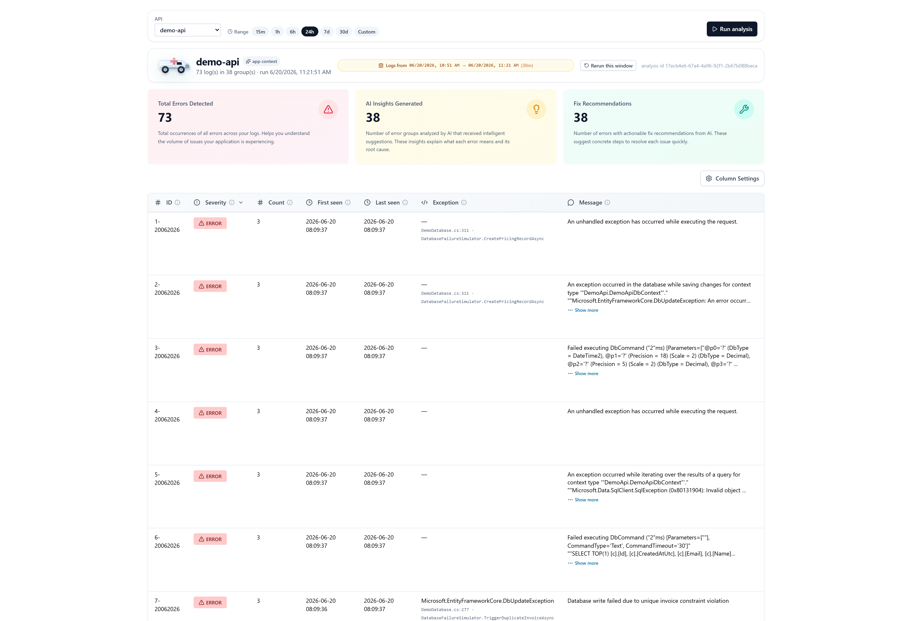
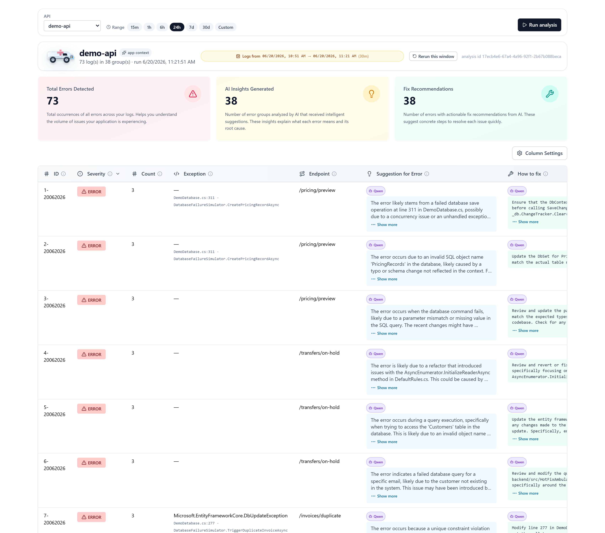
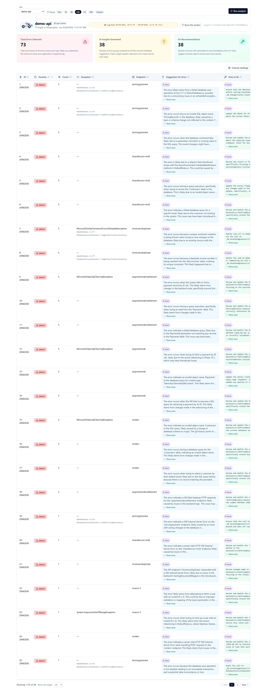
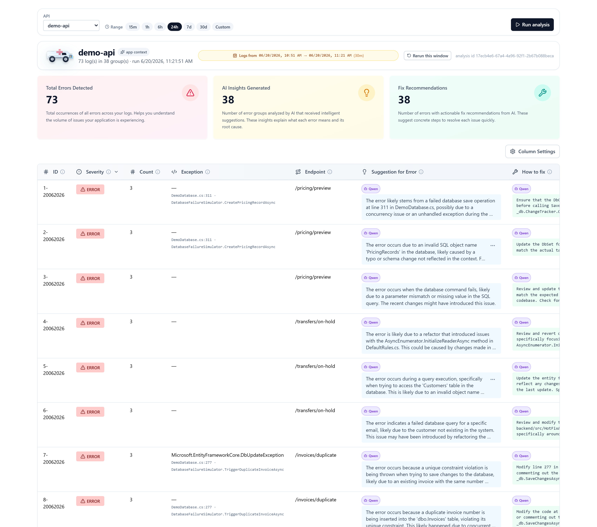

Author: Stanislav Stanev
AI tool used: Claude Code — Anthropic’s agentic CLI — running the Claude Opus 4.8 model (1M-context)
Repository: https://github.com/donstany/HotFixAmbulance
Working-system evidence: docs/evidence/working-system-evidence.pdf
On-call engineers waste the first, most expensive minutes of an incident doing the same manual ritual:
open Kibana, filter the last few hours of errors, eyeball the stack traces, guess the root cause, and
go hunting through Git for the offending change. HotFixAmbulance automates that ritual. It is a
triage tool that, for a chosen .NET Web API and time window, pulls the recent error logs, groups them
into distinct problems, and — for each problem — uses a local Qwen LLM to write two human-readable
columns: “Suggestion for Error” (what the error means) and “How to fix” (a concrete remediation),
grounded in the service’s own Git history. The result is a ranked, explained, actionable error table in
a web UI, plus a CLI for terminal/CI use.
Functional
Non-functional
scripts/demo.ps1) brings up the whole stack (Qwen, Elasticsearch, SQL Server), generates sample errors, runs triage, and opens the UI..NET 9 / C# 13 (backend, CLI) · ASP.NET Core Minimal APIs · Entity Framework Core + SQLite · Elasticsearch 8 ·
LibGit2Sharp · React 18 + TypeScript + Vite + TanStack Table + Tailwind · Ollama-runtime serving Qwen 2.5 (3B) ·
Docker Compose · PowerShell automation · xUnit + FluentAssertions + NSubstitute (backend) · Vitest + Testing Library (frontend).
The system was decomposed (with AI assistance) into focused technological modules, each a separate .NET
project or front-end/infra unit with a single responsibility and a clear seam (interface) to its neighbours.
Elasticsearch ─▶ [1] Ingestion ─▶ [2] Analysis/Grouping ─▶ [3] AI Enrichment (Qwen)
│ grounded by
▼
[4] Git Insights
│
[5] Persistence (SQLite) ◀──────────┘
│
[6] REST API ──▶ [7] React UI (🤖 Qwen badge)
└▶ [8] CLI
[9] Infrastructure (Docker: Qwen / Elastic / MSSQL) + demo orchestration
[10] Testing & Quality (TDD, pre-commit gates) — cross-cutting
| # | Module | Project / Location | Responsibility |
|---|---|---|---|
| 1 | Log Ingestion | HotFixAmbulance.Elastic | Query Elasticsearch, normalise documents to LogEntry. |
| 2 | Analysis & Grouping | HotFixAmbulance.Analysis | Group by fingerprint, rank, baseline suggestions. |
| 3 | AI Enrichment (Qwen) | HotFixAmbulance.Llm + LlmGroupEnricher | Per-group LLM call; JSON contract; fallback. |
| 4 | Git Insights | HotFixAmbulance.GitInsights | Blame + related commits to ground the model. |
| 5 | Persistence | HotFixAmbulance.Persistence | Store runs + per-group AnalyzedBy in SQLite. |
| 6 | REST API | HotFixAmbulance.Api | Endpoints for triage, history, paged groups. |
| 7 | Frontend UI | frontend/ | Paginated table; renders the 🤖 Qwen badge. |
| 8 | CLI | HotFixAmbulance.Cli | One-shot triage for terminal / CI. |
| 9 | Infrastructure | infra/, scripts/ | Dockerised Qwen/Elastic/MSSQL + demo runner. |
| 10 | Testing & Quality | tests/, .claude/hooks | TDD, unit/integration tests, pre-commit gates. |
For every module: Approach & reasoning, Step-by-step workflow, Testing strategy, AI tool choice, and representative prompts.
Approach & reasoning. Keep Elasticsearch behind an IElasticLogSource seam so the pipeline depends on a
domain LogEntry, not on the ES client. A SerilogDocumentMapper translates the stored document shape into
LogEntry; an ElasticLogIngestor validates inputs, applies the severity filter and a MaxDocuments cap.
Step-by-step workflow. Asked the AI to (1) define LogEntry/TimeWindow/LogQuery value types, (2) write
the ingestor with relative/absolute window support and an IsTruncated flag, (3) write the ES client adapter.
Testing strategy. Unit tests with a substituted IElasticLogSource cover the window math, severity filter
and truncation; an Elasticsearch ingest pipeline (infra/elasticsearch) is bootstrapped for the live demo.
AI tool choice. Claude Code — it could hold the whole ingestion contract in context and generate the mapper + tests together.
Prompts: “Design a LogEntry domain type and an ingestor that filters Fatal/Error/Warning over a UTC window with a max-documents cap.” · “Write unit tests for the truncation flag using a fake log source.”
Approach & reasoning. Grouping must be deterministic (no LLM), so it lives behind IAnalysisStrategy.
HeuristicAnalyzer groups by (exception type, normalized message, endpoint), ranks by severity → count →
last-seen, and fills baseline AI columns from rule matches.
Step-by-step workflow. (1) MessageNormalizer to collapse volatile IDs; (2) ErrorGroup.FromLogs aggregation;
(3) RankBySeverity; (4) a SuggestionBuilder + DefaultRules baseline.
Testing strategy. Pure unit tests assert grouping keys, ranking order and correlation-id counting — fast and exhaustive because the layer is side-effect-free.
AI tool choice. Claude Code — strong at generating table-driven ranking tests and edge cases.
Prompts: “Group logs by a stable fingerprint and rank Fatal>Error>Warning, then count desc, then last-seen desc.” · “Add a normalizer that replaces GUIDs/numbers so the same error collapses into one group.”
Approach & reasoning. The AI columns are owned by an IGroupEnricher seam so the strategy is swappable from
config (Analysis:Strategy). LlmGroupEnricher builds a strict-JSON prompt ({suggestion, howToFix}) from the
group + Git evidence, calls the model via ILlmClient (OllamaLlmClient, temperature 0.2, format:"json"),
and on any failure (timeout, unreachable, bad JSON) degrades to the deterministic Git heuristic. A successful
call tags the group AnalyzedBy = "Llm"; that single fact drives the UI badge.
Step-by-step workflow. (1) LlmPromptBuilder (system contract + fact dump); (2) OllamaLlmClient that never
throws (returns null on failure); (3) LlmGroupEnricher with fallback; (4) propagate per-group AnalyzedBy
through TriageService → ErrorGroup → API → UI.
Testing strategy. Unit tests with a substituted ILlmClient assert: valid JSON → Llm; null/garbage → heuristic
fallback; and that TriageService stamps each group with the enricher’s source.
AI tool choice. Claude Code — it implemented the fallback contract, the run-level Mixed/Llm/Heuristic aggregation, and the tests in one TDD loop.
Prompts: “Add an LLM enricher that asks the model for {suggestion, howToFix} as JSON and falls back to the Git heuristic on any error — never throw.” · “Make sure every group records which strategy produced it, and surface a per-group marker in the UI proving Qwen was used.”
Approach & reasoning. An LLM answer is only useful if grounded in the real code, so FixHintBuilder
(behind IFixHintSource) uses LibGit2Sharp to fetch the offending file’s blame + a code snippet and search
origin/main for related commits; this evidence is fed to both the heuristic and the Qwen prompt.
Step-by-step workflow. (1) IGitRepoCache to clone/pull per API; (2) IGitHistoryReader for blame + keyword
commit search; (3) FixHintBuilder to assemble a compact evidence string.
Testing strategy. Unit tests substitute the repo cache/reader and assert the formatted hint contains the
expected file:line, blame and commit SHAs.
AI tool choice. Claude Code — handled the LibGit2Sharp specifics and kept the evidence format testable.
Prompts: “Given a stack file+line, return blame + a code snippet from origin/main and the related commits.”
Approach & reasoning. Runs are stored as a row with the groups serialised to JSON (SQLite), keeping the schema
trivial and migration-free; the API is ASP.NET Core Minimal APIs with server-side paging/sorting (GroupPager).
Step-by-step workflow. (1) HotFixDbContext + TriageRun (incl. nullable AnalyzedBy for back-compat);
(2) repository; (3) endpoints: run triage, latest, by-id, paged groups, history.
Testing strategy. Integration tests with WebApplicationFactory hit the real endpoints (in-memory/SQLite),
asserting status codes, paging bounds and the analyzedBy field round-trips.
AI tool choice. Claude Code — generated endpoints + integration tests and kept DTOs in sync with the frontend types.
Prompts: “Expose paginated groups with sort/dir validation and an allowed page-size list, plus a run-by-id endpoint.”
Approach & reasoning. A TanStack-Table grid with toggleable columns; the AI columns render a small violet
🤖 Qwen badge iff analyzedBy === 'Llm' — the visible proof the model was used.
Step-by-step workflow. (1) typed API client + ErrorGroup type incl. analyzedBy; (2) QwenBadge component;
(3) render it in the Suggestion and How-to-fix cells; (4) metrics panel (“AI Insights Generated”).
Testing strategy. Vitest + Testing Library: badge appears for Llm, is absent for Heuristic/null — written
before the component (TDD red→green).
AI tool choice. Claude Code — wrote the failing tests first, then the component, matching the repo’s TDD rule.
Prompts: “Render a Qwen badge on the AI columns only when analyzedBy is 'Llm'; add Vitest tests for all three cases first.”
Approach & reasoning. Mirror the existing infra/<service> pattern: a CPU-only Qwen runtime in Docker Compose
(infra/qwen), an idempotent bootstrap.ps1 that pre-pulls qwen2.5:3b, and a demo.ps1 that orchestrates the
whole stack and asserts the produced run was analysed by the LLM before opening the UI.
Step-by-step workflow. (1) compose + healthcheck; (2) bootstrap (pull + chat probe); (3) corporate-CA injection
(export-host-ca.ps1 + docker-compose.corp.yml) for TLS-intercepting proxies; (4) wire -WithLlm/default LLM env into demo.ps1.
Testing strategy. Each script is verified live: compose config, container health, /api/tags, model present,
idempotent re-run, and an end-to-end demo asserting analyzedBy ∈ {Llm, Mixed}.
AI tool choice. Claude Code — it ran the Docker/PowerShell commands, diagnosed failures from their output, and iterated.
Prompts: “Make Qwen part of the infrastructure in Docker like Elasticsearch, and guarantee the model is present before the app starts.” · “The container can’t verify TLS through our proxy — inject the corporate CA.”
Approach & reasoning. A mandatory TDD cycle (failing test first) and a pre-commit hook that blocks any commit
unless dotnet test, dotnet format, frontend tests and lint all pass — so main/integration stays green.
Step-by-step workflow. Write the failing test → minimal implementation → run → commit (hook gates it).
Testing strategy. 160 backend unit tests + 18 integration tests + 34 frontend tests, all green at each commit.
AI tool choice. Claude Code — drove the red→green→commit loop and respected the project’s skills/hooks.
Prompts: “Add the failing test for AnalyzedBy first, watch it fail, then implement and run the suite.”
ollama pull the model — `x509: certificate signedby unknown authority` — because the corporate proxy MITM-terminates TLS and the container lacked the corporate root
CA. Solved by exporting the host CA bundle (export-host-ca.ps1) and mounting it via a docker-compose.corp.yml
overlay with SSL_CERT_FILE. This was the single hardest, most environment-specific problem.
IGroupEnricher seam added in aprior phase, so it crashed with “Unable to resolve service for type IGroupEnricher.” Found it by running the CLI;
fixed by registering AddHotFixGroupEnrichment — which also enabled the CLI to use Qwen.
mitigated by warming the model and raising the API client timeout. A real trade-off of running a private model locally.
Chrome headless needing absolute paths and an origin before localStorage; SQLite file-locks when a running API blocked
the build. Each was diagnosed from command output and fixed.
Claude Code running the Claude Opus 4.8 model (1M-context) was the primary and most valuable tool. Beyond code generation it could run the project — execute
Docker/PowerShell/dotnet, read the failures, and iterate — which is what actually solved the infrastructure problems
(the CA injection, the DI crash, the parse bug). Its skills/sub-agents kept the work disciplined (plan → TDD → verify →
commit with a passing pre-commit gate), and it could reason across the whole repo (backend + frontend + infra) to keep
types, DTOs and the demo orchestration consistent end-to-end.
Qwen (currently the internal tag stays the generic Llm, while the UI shows “Qwen”).See docs/evidence/working-system-evidence.pdf (4 captioned figures). Highlights:
demo-api — 73 logs → 38 groups, with 38 “AI Insights Generated” and 38 “Fix Recommendations.”(e.g. “…failed database save operation at line 311 in DemoDatabase.cs…”, “…invalid SQL object name 'Pricing.Records'…”).
analyzedBy = "Llm").docker ps (Qwen healthy on :11434), ollama list (qwen2.5:3b, 1.9 GB), API run analyzedBy = Llm with withSuggestions = 38 / withFixes = 38, and the container at 1177 % CPU during inference.
Reproduce locally:
powershell -File scripts/demo.ps1 -WithElastic -KeepRunning # then open the printed UI URL — every analysed group shows the 🤖 Qwen badge


analyzedBy === 'Llm' — a value the backend sets exclusively after a successful Qwen completion. The text is genuinely model-generated and context-specific (e.g. "…failed database save operation at line 311 in DemoDatabase.cs…", "…invalid SQL object name 'Pricing.Records'…"), not a static template. Proves the system demonstrably uses Qwen.
analyzedBy = "Llm"), confirming the whole run was analysed by Qwen, not the heuristic fallback.Figure 4 — Backend / runtime evidence (terminal).
# Qwen is served from Docker (CPU-only) on :11434 $ docker ps --filter name=hfa-qwen hfa-qwen ollama/ollama:latest Up 59 minutes (healthy) 0.0.0.0:11434->11434/tcp # qwen2.5:3b is pulled into the persistent volume $ docker exec hfa-qwen ollama list NAME ID SIZE MODIFIED qwen2.5:3b 357c53fb659c 1.9 GB 37 minutes ago # A triage run produced via the API — analysed by the LLM, every group enriched $ curl -s http://localhost:5283/api/triage/runs/17ecb4e6-.../ apiName = demo-api analyzedBy = Llm totalLogs = 73 totalGroups = 38 summary.withSuggestions = 38 # all 38 groups got an AI suggestion summary.withFixes = 38 # all 38 groups got an AI fix # During inference the Qwen container saturates the CPU (one call per group) $ docker stats hfa-qwen --no-stream hfa-qwen CPU = 1177% MEM = 4.4 GiB / 15.4 GiB
GitHub: https://github.com/donstany/HotFixAmbulance
(Feature work on branch integration-llm.)
This is my own idea project. Beyond the exam, I intend to present it to myPOS management as a
working prototype for everyday use by the .NET teams — a practical, privacy-respecting way to shorten
incident triage in a fintech environment where production data must stay in-house.
Why it is worth adopting:
scrolling raw Kibana logs — the “what” and the “how to fix” are already written for each distinct problem.
the team’s own Git history** (blame + related commits), not generic advice.
and post-mortems start from a common baseline.
source context leave myPOS infrastructure. Critical for banking/PCI contexts where cloud LLMs are a non-starter.
qwen2.5:3b) locally; there are no cloud-API usage fees.additive, not a migration.
via the deterministic Git heuristic, so it can be enabled per-team without risk.
can grow from a prototype to a shared internal service.
Proposed next step at myPOS: pilot it with one .NET team on a non-critical service for two weeks, measure the
change in triage time and engineer feedback, then decide on a shared, GPU-backed internal deployment.
This section lets a reviewer reproduce the entire experimental setup shown in §5 from a clean checkout. One
PowerShell command brings up the whole stack (Qwen + Elasticsearch + SQL Server), generates sample errors, runs the
triage on Qwen, starts the API + UI, asserts the run was analysed by the LLM, and opens the browser on it.
qwen2.5:3b ≈ 2 GB,Elasticsearch, SQL Server). Subsequent runs reuse the cached volumes and are much faster.
11434 (Qwen), 5283 (API), 5173 (frontend), 9200 (Elasticsearch), 14333 (SQL Server).# 1) Clone and switch to the feature branch git clone https://github.com/donstany/HotFixAmbulance.git cd mps-banking-hot-fix-ambulance git checkout integration-llm # 2) Restore tooling and install the pre-commit hook (.NET restore + npm install) powershell -File scripts/bootstrap.ps1 # 3) Make sure Docker Desktop is running docker version
powershell -File scripts/demo.ps1 -WithElastic -KeepRunning
This single command performs, in order:
1. Starts the Qwen runtime (infra/qwen, Docker, CPU-only) and runs its bootstrap, which pulls qwen2.5:3b
if absent and verifies it with a JSON /api/chat probe. (First run downloads ~2 GB — be patient.)
2. Sets Analysis:Strategy=Llm + the Llm endpoint/model for every child process.
3. Starts SQL Server and Elasticsearch (Docker) and waits for health.
4. Builds and starts demo-api, hammers its endpoints to generate realistic error traffic, then reshapes
the logs into Elasticsearch via the ingest pipeline.
5. Runs the CLI triage on Qwen, then builds and starts the API (:5283) and the frontend (:5173).
6. Creates a triage run via the API and asserts the result’s analyzedBy is Llm/Mixed — i.e. it
fails loudly if Qwen was not actually used.
7. Opens your default browser on the produced run (see §8.5 for the link and what is shown) — every
analysed group shows the 🤖 Qwen badge.
[demo] LLM strategy enabled: provider=Qwen model=qwen2.5:3b endpoint=http://localhost:11434 [qwen-bootstrap] chat probe: ok [demo] Producing error traffic [es-bootstrap] Reindex: total=94 created=94 updated=0 failures=0 [demo] Running CLI: hot-fix-ambulance demo-api --lookback 1h [demo] Starting HotFixAmbulance.Api on http://localhost:5283 [demo] Creating the run via API: POST /api/triage/demo-api?lookbackHours=1 [demo] API run id=<guid> analyzedBy=Llm groups=38 [demo] Verified: this run was analyzed by Qwen (analyzedBy=Llm). The UI shows the Qwen badge. [demo] Opening UI: http://localhost:5173/?analysisId=<guid>&api=demo-api
When the demo finishes it automatically opens your default browser on the produced run. The URL looks like:
http://localhost:5173/?analysisId=<run-guid>&api=demo-api
The exact <run-guid> is printed in the console (see §8.4 — the Opening UI: line). While the API (:5283)
and the frontend (:5173) stay running you can also open the result manually at any time:
demo-api.analysisId printed in the console.What you will see (Figure 5). The triage dashboard for demo-api: a header with the run summary
(73 log(s) in 38 group(s)), a metrics strip (Total Errors Detected, AI Insights Generated,
Fix Recommendations), and the ranked error table. In the “Suggestion for Error” and “How to fix”
columns, every analysed group shows a violet 🤖 Qwen badge above the model-written text — the visible proof
that the Qwen LLM produced the analysis. The Column Settings button (top-right) toggles which columns are
shown; the Run analysis button (top-right) re-runs the triage for the selected API and time range.

# The Qwen model is loaded in the container docker exec hfa-qwen ollama list # -> qwen2.5:3b ... 1.9 GB # Produce a run via the API and confirm it was analysed by the LLM curl.exe -s -X POST "http://localhost:5283/api/triage/demo-api?lookbackHours=1" # -> JSON whose "analyzedBy" field is "Llm" # Watch the Qwen container saturate the CPU during inference docker stats hfa-qwen --no-stream # -> CPU ~1000%+ while a run is in flight
x509: certificate signed by unknown authority on model pull (corporate networks). demo.ps1 already handles this — it exports the host CA bundle (infra/qwen/export-host-ca.ps1) and starts the runtime with
infra/qwen/docker-compose.corp.yml so the container trusts an intercepting proxy. On a normal home network no
action is needed.
docker compose up failed. Docker Desktop is not running — start it and re-run.5283/5173/11434, or close a previous demo run.powershell -File scripts/demo.ps1 -WithElastic -KeepRunning -SkipLlm.docker compose -f infra/qwen/docker-compose.yml down # keeps the model volume docker compose -f infra/elasticsearch/docker-compose.yml down docker compose -f infra/mssql/docker-compose.yml down # add `-v` to any of the above to also delete its data/model volume
The project was built in 69 commits over four days (16–20 June 2026). Every commit was gated by a pre-commit
hook that runs the full backend + frontend test suites, formatting and lint — --no-verify was never used — so each
row below is a green, independently-inspectable checkpoint. The history is generalised by day, with the milestone
reached and a few representative commit ids.
| Day | Milestone | Key commits | What was done |
|---|---|---|---|
| 16 Jun | End-to-end skeleton working | 981a210, bb62f32, 0cd65da, b213806, 2b061dd, bc7b613, b773ed7 | Scaffolded the repo + Claude tooling, then built the backend solution and Core domain (Severity / LogEntry / ErrorGroup, 16 tests) and every module in turn — Elastic ingestion, heuristic grouping, Git-insights (LibGit2Sharp), persistence + Minimal API, and the CLI — plus the React triage table, the demo-api with Serilog, and a Dockerized Elasticsearch stack. First full pipeline: ingest → analyse → git evidence → API / UI / CLI. |
| 18 Jun | Realistic demo data + time windows | acd1c28, 40759e9, 0a3b622, 66a932e, d54056f | Rewrote demo-api for real EF Core CRUD against Dockerized SQL Server (genuine DB failures: unique-constraint, timeouts); surfaced the offending source line + git blame in “How to fix”; added the TimeWindow value object (relative/absolute ranges), the frontend TimeRangePicker + API dropdown, and expandable cells. |
| 19 Jun | Server-side pagination + LLM groundwork | c5dd730, 13e7027, b923f5c, e5670e9, d0111a6 | Shipped server-side pagination (PagedResult / TriageSummary / GroupPager, paged groups endpoint, TriageRunHeader, numbered footer); fixed fractional lookback hours; scaffolded the HotFixAmbulance.Llm project and the JSON-contract prompt builder. |
| 20 Jun | Whole flow on local Qwen + visible proof + docs | 3831bc8, 9d7f17e, c15520b, 979252b, 7e25e9a, 3657a19 | Completed the LLM layer (ILlmClient / OllamaLlmClient, the IGroupEnricher seam, LlmGroupEnricher with graceful fallback, the Analysis:Strategy toggle); added the per-group AnalyzedBy marker and the 🤖 badge, then rebranded it to Qwen; fixed a latent CLI DI break; Dockerised the Qwen runtime with model bootstrap + corporate-CA injection; ran the whole demo on Qwen and proved it via the UI badge; and produced the full exam documentation (write-up, evidence, merged PDF). |
Reviewer note. The history reads as a disciplined, test-first progression: a working vertical slice first
(16 Jun), then realism and UX (18 Jun), then scale/pagination and LLM groundwork (19 Jun), and finally the AI
feature delivered end-to-end with proof and documentation (20 Jun). Each phase is a small, independently-tested
commit, so any single step can be reviewed in isolation, and the green pre-commit gate on every commit means the
main/integration branch was never left broken.